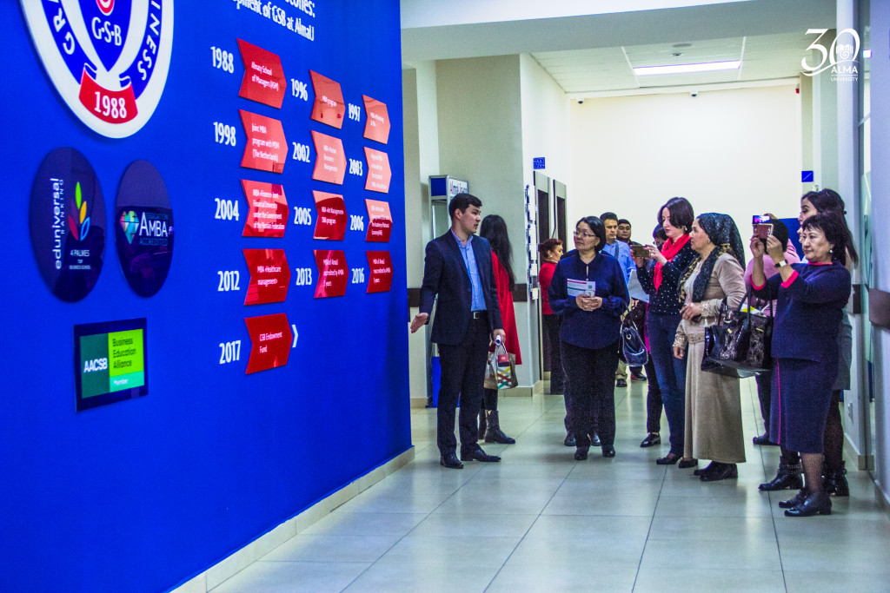

AlmaU является одним из первых бизнес-вузов Казахстана. Учебное заведение было организовано в 1988 году как Алматинская школа менеджеров, в 1996 году было преобразовано в Международную академию бизнеса. После в 2014 году МАБу был присужден статус Университета — Almaty Management University (AlmaU)
Высшее учебное заведение в Алма-Ате,
осуществляющее подготовку специалистов по программам:
Бакавлариата
Магистратуры
Докторантуры
MBA (магистр делового администрирования)
DBA (доктор делового администрирования).

Специальности
МЕНЕДЖМЕНТ
Менеджер – это специалист, способный организовать и контролировать работу других.
Но сфера применения
его сил и знаний может быть разной.
Финансы-учебная программа по подготовке квалифицированных специалистов для финансовой системы страны, которые должны объективно оценивать экономические процессы.
Экономика-Профессиональная деятельность бакалавра экономики осуществлять аналитическую, организаторскую (административную) и образовательную (преподавательскую).
Маркетинг-В современном мире является одной из важнейших концепций управления предприятием. Это профессиональный вид деятельности, направленный на всестороннее исследование и поиск эффективных средств продвижения товара на рынке.
Логистика-Логистика решает задачи, связанные с оптимизацией процессов снабжения, производства, распределения, складирования, транспортировки, то есть охватывает весь круг вопросов, связанных с перемещением материальных и информационных потоков .
Оценка-Профессиональная деятельность специалиста-оценщика происходит в сфере экономических услуг. Оценщик вносит свой вклад в жизнеспособность рынков имущества путем обеспечения прозрачности в финансовых процессах и отчетности
Региноведение-Комплексная учебная дисциплина, занимающаяся изучением закономерностей развития того или иного региона. Она включает в себя исследование основных этапов его историко-культурного развития, анализ современной ситуации и умение прогнозировать возможные пути развития региона, изучает его прошлое, настоящее и будущее.
Ресторанное дело и гостинчный бизнес-Туризм является одной из наиболее динамично развивающихся секторов экономики в мире и источником дохода страны. Поэтому на современном этапе становятся актуальными вопросы подготовки специалистов для гостиничного и ресторанного бизнеса, увеличивается востребованность в профессиональных специалистах.
Информационные системы-Объектами профессиональной деятельности выпускников этой специальности являются информационные системы и сети, предназначенные для сбора, хранения, обработки и передачи информации в области строительства, строительного производства, а также программное обеспечение, эксплуатация и проектирование информационных систем.
Юриспруденция-Деятельность юриста направлена на реализацию правовых норм и обеспечение правопорядка в различных сферах жизни общества.
История Университета
Осенью 1988 года Алма-Атинский горисполком инициировал создание республиканского
кооперативного объединения
«Союз», руководителем которого был приглашён Леонид Соломин. Вместе с
Баянгали Койшибаевым он задумал создать первую бизнес-школу в Казахстане.
12 декабря 1988 года в Алма-Ате на базе кооперативного
объединения «Союз» была организована Алма-Атинская школа менеджеров (АШМ),
её первые слушатели занимались в актовом зале
Советского райкома партии ровно месяц. В первый период
существования учебного заведения обучение велось в форме краткосрочных курсов,
на которых, как правило, учились люди с высшим образованием